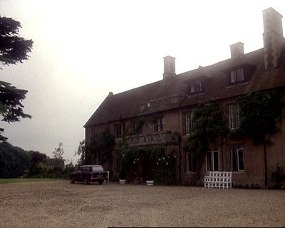
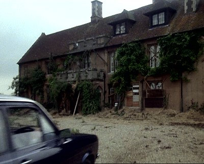
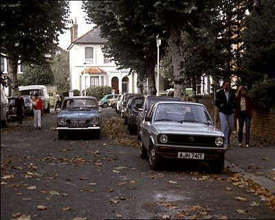
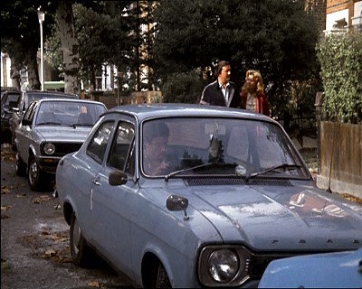
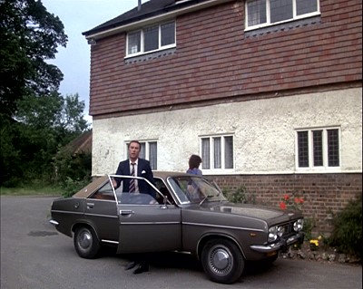
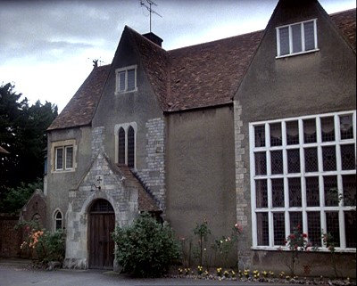
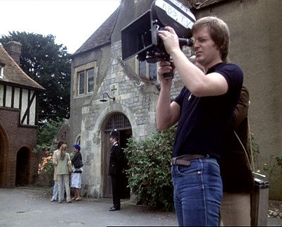
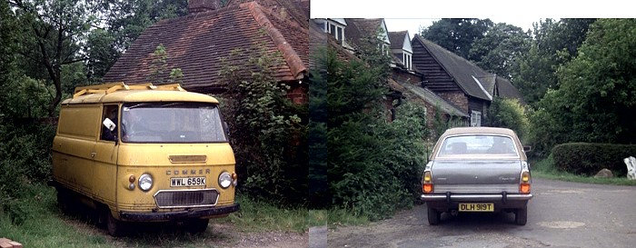
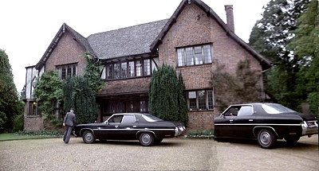
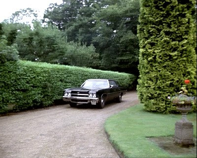

|
|
HELP FIND THE FOLLOWING LOCATIONS
PAGE 93
These are the locations listed as unknown by the Hammer House of Horror web page. Also visit the Forum at the web site where new discoveries are being made.
HAMMER
HOUSE OF HORROR: Rude Awakening
(Peter Sasdy:
1980)
Scotsgrove House, Scotsgrove
Hill, Thame, Oxfordshire - Lower Moat Manor.
(Identified by www.hammerhouseofhorrortvseries.co.uk)
 
HAMMER
HOUSE OF HORROR: The Mark of Satan
(Don Leaver: 1980)
Heathfield Road, Acton, London W3 - The road in which Edwyn's
house is situated. Edwyn's house is No.9.
(Identified by Julian Manhood, February 2018)


HAMMER HOUSE OF HORROR: The Carpathian Eagle (Francis Megahy:
1980)
The Chiltern Hospital, London Road, Great Missenden, Buckinghamshire - Detective
Inspector Clifford (Anthony Valentine) and Natalie (Suzanne Danielle) arrive at
the house of Mrs. Henska.
(Identified by Julian Manhood, February 2018)
  
The police keep an eye on Mrs. Henska from an inconspicuous van.

Tudor House on Sycamore Road, Amersham – The home of
aforementioned businessman.
(Identified by Kevin Flanagan (at www.hammerhouseofhorrortvseries.co.uk), June 2020)
 
Think you know a spot? Need a bigger image? Email me.
< Previous | Index | Avengerland | Next >
Copyright © 2003 Anthony R. McKay